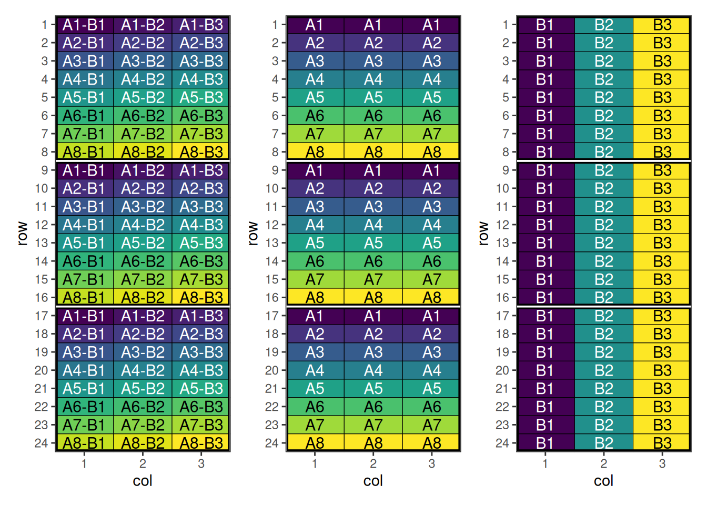
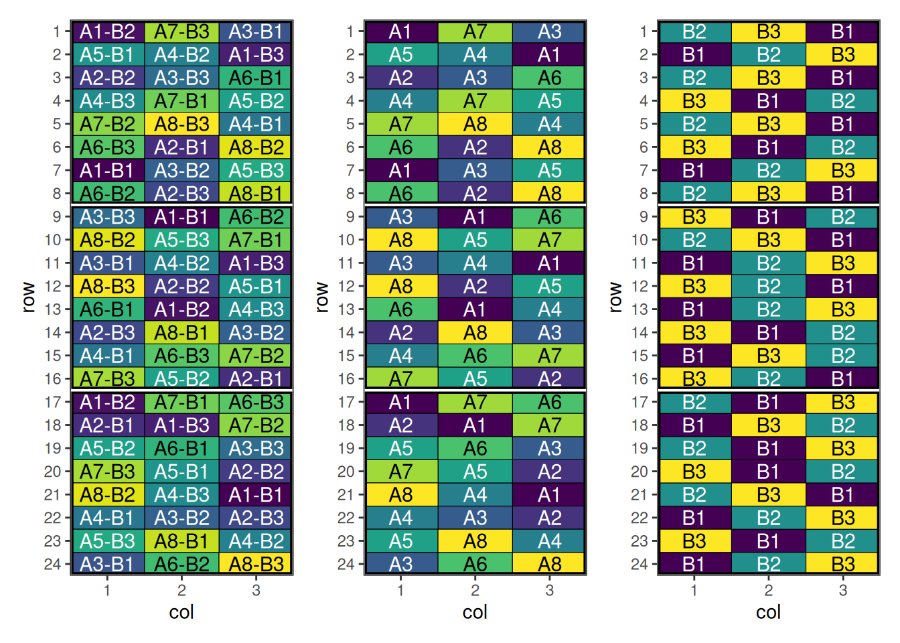

Factorial Design
Overview
Factorial designs are experimental designs used to study the effects of two or more factors simultaneously. They allow estimation of main effects and interactions between factors, making them efficient and informative.
When to Use
- Studying multiple factors at the same time
- Detecting interactions between factors
- Efficient use of experimental units
Setting Up Factorial Design with speed
Now we can create a data frame representing a factorial design. Note that the treatment column we are creating is the interaction (or combination) of the individual treatments.
treatment_a <- paste0("A", 1:8)
treatment_b <- paste0("B", 1:3)
treatments <- with(expand.grid(treatment_a, treatment_b), paste(Var1, Var2, sep = "-"))
factorial_design <- initialise_design_df(treatments, 24, 3, 8, 3)
head(factorial_design) row col treatment row_block col_block block
1 1 1 A1-B1 1 1 1
2 2 1 A2-B1 1 1 1
3 3 1 A3-B1 1 1 1
4 4 1 A4-B1 1 1 1
5 5 1 A5-B1 1 1 1
6 6 1 A6-B1 1 1 1Plotting these factors shows the initial layout of the interaction and main effects.

Performing the Optimisation
For factorial designs, speed provides a customised objective function objective_function_factorial. The optimise_params argument is also used in this case to adjust the optimisation strategy due to the difficulty of optimising such designs.
Make sure factorial_separator matches how you constructed the interaction treatment (here we used "-"). If your treatments use a different separator (e.g. "A1:B2"), pass factorial_separator = ":".
factorial_result <- speed(
data = factorial_design,
swap = "treatment",
swap_within = "block",
spatial_factors = ~ row + col,
obj_function = objective_function_factorial,
optimise_params = optim_params(random_initialisation = 50, adaptive_swaps = TRUE),
early_stop_iterations = 10000,
iterations = 200000,
seed = 112
)row and col are used as row and column, respectively.Optimising level: single treatment within block
Level: single treatment within block Iteration: 1000 Score: 29.75155 Best: 29.75155 Since Improvement: 19
Level: single treatment within block Iteration: 2000 Score: 20.26708 Best: 20.26708 Since Improvement: 150
Level: single treatment within block Iteration: 3000 Score: 16.98137 Best: 16.98137 Since Improvement: 198
Level: single treatment within block Iteration: 4000 Score: 16.78261 Best: 16.78261 Since Improvement: 718
Level: single treatment within block Iteration: 5000 Score: 14.86957 Best: 14.86957 Since Improvement: 191
Level: single treatment within block Iteration: 6000 Score: 14.12422 Best: 14.12422 Since Improvement: 578
Level: single treatment within block Iteration: 7000 Score: 14.12422 Best: 14.12422 Since Improvement: 1578
Level: single treatment within block Iteration: 8000 Score: 14.12422 Best: 14.12422 Since Improvement: 2578
Level: single treatment within block Iteration: 9000 Score: 14.12422 Best: 14.12422 Since Improvement: 3578
Level: single treatment within block Iteration: 10000 Score: 14.12422 Best: 14.12422 Since Improvement: 4578
Level: single treatment within block Iteration: 11000 Score: 14.12422 Best: 14.12422 Since Improvement: 5578
Level: single treatment within block Iteration: 12000 Score: 14.12422 Best: 14.12422 Since Improvement: 6578
Level: single treatment within block Iteration: 13000 Score: 14.12422 Best: 14.12422 Since Improvement: 7578
Level: single treatment within block Iteration: 14000 Score: 14.12422 Best: 14.12422 Since Improvement: 8578
Level: single treatment within block Iteration: 15000 Score: 14.12422 Best: 14.12422 Since Improvement: 9578
Early stopping at iteration 15422 for level single treatment within block
factorial_resultOptimised Experimental Design
----------------------------
Score: 14.12422
Iterations Run: 15423
Stopped Early: TRUE
Treatments: A1-B1, A1-B2, A1-B3, A2-B1, A2-B2, A2-B3, A3-B1, A3-B2, A3-B3, A4-B1, A4-B2, A4-B3, A5-B1, A5-B2, A5-B3, A6-B1, A6-B2, A6-B3, A7-B1, A7-B2, A7-B3, A8-B1, A8-B2, A8-B3
Seed: 112 Output of the Optimisation
The output summarises the optimisation of the factorial interaction treatment (e.g. "A1-B2") across the spatial layout. The reported score is for the whole design after optimisation, and the returned design_df contains the updated treatment allocation.
Because the treatment column encodes multiple factors, it can be helpful to split it back into its component factors (e.g. treatment_a and treatment_b) when inspecting the result. This lets you check whether the optimisation improved not only the interaction layout, but also the balance/adjacency patterns of the main effects.
str(factorial_result)List of 8
$ design_df :Classes 'design' and 'data.frame': 72 obs. of 8 variables:
..$ row : int [1:72] 1 1 1 2 2 2 3 3 3 4 ...
..$ col : int [1:72] 1 2 3 1 2 3 1 2 3 1 ...
..$ treatment : chr [1:72] "A1-B2" "A7-B3" "A3-B1" "A5-B1" ...
..$ row_block : num [1:72] 1 1 1 1 1 1 1 1 1 1 ...
..$ col_block : num [1:72] 1 1 1 1 1 1 1 1 1 1 ...
..$ block : num [1:72] 1 1 1 1 1 1 1 1 1 1 ...
..$ treatment_a: chr [1:72] "A1" "A1" "A1" "A2" ...
..$ treatment_b: chr [1:72] "B1" "B2" "B3" "B1" ...
..- attr(*, "out.attrs")=List of 2
.. ..$ dim : Named int [1:2] 24 3
.. .. ..- attr(*, "names")= chr [1:2] "row" "col"
.. ..$ dimnames:List of 2
.. .. ..$ row: chr [1:24] "row= 1" "row= 2" "row= 3" "row= 4" ...
.. .. ..$ col: chr [1:3] "col=1" "col=2" "col=3"
$ score : num 14.1
$ scores : num [1:15423] 79.7 87.2 84.6 88.4 87.1 ...
$ temperatures : num [1:15423] 100 99 98 97 96.1 ...
$ iterations_run: num 15423
$ stopped_early : logi TRUE
$ treatments : chr [1:24] "A1-B1" "A1-B2" "A1-B3" "A2-B1" ...
$ seed : num 112
- attr(*, "class")= chr [1:2] "design" "list"Visualise the Output
treatments <- strsplit(as.character(factorial_result$design_df$treatment), "-") |>
unlist() |>
matrix(ncol = 2, byrow = TRUE)
factorial_result$design_df[c("treatment_a", "treatment_b")] <- treatments
pa <- autoplot(factorial_result, treatments = "treatment_a")
pb <- autoplot(factorial_result, treatments = "treatment_b")
p <- autoplot(factorial_result)
p + pa + pb + plot_layout(ncol = 3)
This design has now been optimised for both main and interaction effects.
Spatial Design Considerations
Field Shape and Orientation
Neighbour Effects
Using speed Effectively
- Set appropriate parameters: Balance optimisation time with improvement
- Visualise designs: Always plot layouts before implementation
- Compare alternatives: Test multiple blocking strategies
- Validate results: Check constraint satisfaction and efficiency factors
Conclusion
Further Reading
Related Vignettes
This vignette demonstrates the versatility of the speed package for agricultural experimental design. For more advanced applications and custom designs, consult the package documentation and additional vignettes.